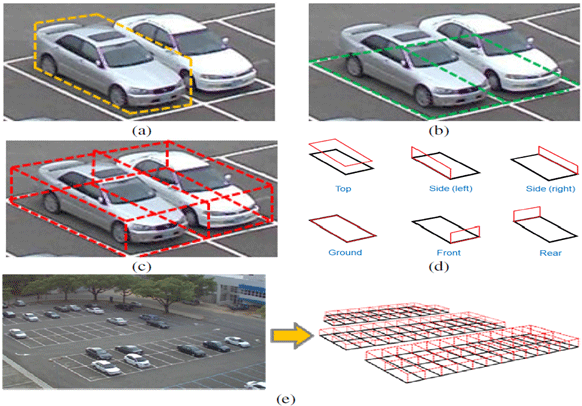
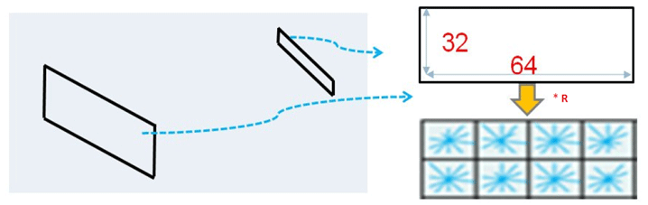
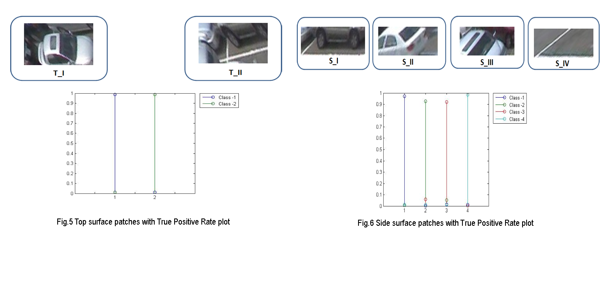

Compressive sensing application
Motivation
Vision-based systems for smart parking lot management have attracted great attention in recent years. This systems are mainly challenged by dramatic lighting variations, shadows cast on the scene, varying perspective distortion in the image and inter-object occlusion among parked cars and the ground plane, insufficient illumination during night time. Literature study shows that related algorithms can be broadly classified into car-oriented methods, space-oriented methods, hybrid methods and parking-lot-oriented methods. For such surveillance applications, we have to continuously monitor the parking lot and processing a raw video output is computationally costly.In the field of video surveillance, we have a huge amount of redundant and sparse data in the form of images. Compressive sensing is a robust and scalable sensing technique which can exploit the sparsity of a signal to compress it. In this study, my promary goal is to evaluate the technical feasibility and advantages observed if Compressive sensing is applied to traditional Parking-lot-oriented method of vacant parking space detection system.
Theory
Surface-Based Parking Lot Structure
For car-oriented approaches, which tend to capture the texture characteristics of vehicles, seem to provide suitable solutions to handling the occlusion and shadow effects. In contrast, the space-oriented approaches, which were designed to analyze the texture of the image area corresponding to a vacant parking space, can better handle the perspective distortion by adding 3-D scene information. Hence, if we can find a way to benefit from both kinds of approaches, we may achieve robust performance.

Fig.1 - (a) Image region for car-based inference. (b) Image region for
space-based inference.
Fig.1 - (a) Image region for car-based inference. (b) Image region for
space-based inference.
(c) Cuboid modelling of parking spaces. (d) Planar
surfaces in the cuboid model.
(e) A parking lot model composed of planar
surfaces.
In terms of car-oriented approaches, systems usually check the image area, as shown in Figure 1(a), to check the existence
of a car. As for the space-oriented approaches, the pixel-based or texture-based feature inside the region of a parking space is
used for analysis, as shown in Figure 1(b). In comparison, our approach treats the parking spaces as a set of cubes, as
illustrated in Figure 1(c). Each cube is composed of six patches like Figure 1(d). If looking into the details, we may
find that the ground plane of a parking space is the ground patch, while a car is made up of patches. Thus, we suggest
using surfaces to represent the parking lot structure so that we can benefit from both the car-oriented and space-oriented methods.
For a structural parking lot, we may detect the status of each parking space by observing occlusion patterns inside each image patch. To be specific, we demonstrate various kinds of patterns inside different projection patches in Figure 2. In total, there are 14 different patterns. Here, owing to the regularity of occlusion patterns among objects, an image patch presents distinguishable textures for vacant space detection. Thus, a direct method to determine the parking statuses is to classify the selected patches into one of the 14 occlusion patterns.
For a structural parking lot, we may detect the status of each parking space by observing occlusion patterns inside each image patch. To be specific, we demonstrate various kinds of patterns inside different projection patches in Figure 2. In total, there are 14 different patterns. Here, owing to the regularity of occlusion patterns among objects, an image patch presents distinguishable textures for vacant space detection. Thus, a direct method to determine the parking statuses is to classify the selected patches into one of the 14 occlusion patterns.

Fig.2 - DATASET: 14 types of patch patterns and their classification labels
Compressive Sensing
Compressed sensing is a signal processing technique for efficiently acquiring and reconstructing a signal, by finding solutions to underdetermined linear systems. This is based on the principle that, through optimization, the sparsity of a signal can be exploited to recover it from far fewer samples than required by the Shannon-Nyquist sampling theorem. There are two conditions under which recovery is possible. The first one is sparsity which requires the signal to be sparse in some domain. The second one is incoherence which is applied through the isometric property which is sufficient for sparse signals. A tutorial on Compressive sensing application for video can be found here.Compressive Tracking
Tracking algorithms can be generally categorized as either Generative(Generative tracking algorithms typically learn a model to represent the target object and then use it to search for the image region with minimal reconstruction error.) or Discriminative(Discriminative algorithms pose the tracking problem as a binary classification task in order to find the decision boundary for separating the target object from the background.) based on their appearance models.Compressive Tracking algorithm is an effective and efficient tracking algorithm with an appearance model based on features extracted in the compressed domain. The main components of compressive tracking algorithm are shown by Figure 3.
Fig.3 Main components of compressive tracking algorithm
This appearance model is generative as the object can be well represented
based on the features extracted in the compressive domain. It is also discriminative
because it uses these features to separate the target from the surrounding
background via a naive Bayes classifier. In this appearance model, features
are selected by an information-preserving and non-adaptive dimensionality reduction
from the multi-scale image feature space based on compressive sensing
theories.
Methodology
We have a dataset containing 14 types of patch patterns and their classification labels and these are the steps we employ to evaluate the
functionality of compressed domain in patch classification.
- Patch Normalization
- Each Patch is normalized to a 32x62 matrix.
- Normalized patch is divided into 2x4 number of cells with each 16x16 pixels.
- Multiply Measurement matrix to the Patch
- A Measurement matrix is multiplied.
- Feature extraction using Histogram of Oriented Gradients (HOG)
- HOG features are extracted with 8 Histogram bins and with a overlap of 50%
- Classifying the features using Support Vector Machines
- Each Surface is separately classified using one classifier.
- We have Training dataset and Testing dataset separately.

Fig.4 Patch Normalization
Results
We have individually classified the patches of each surface with a classifier.
